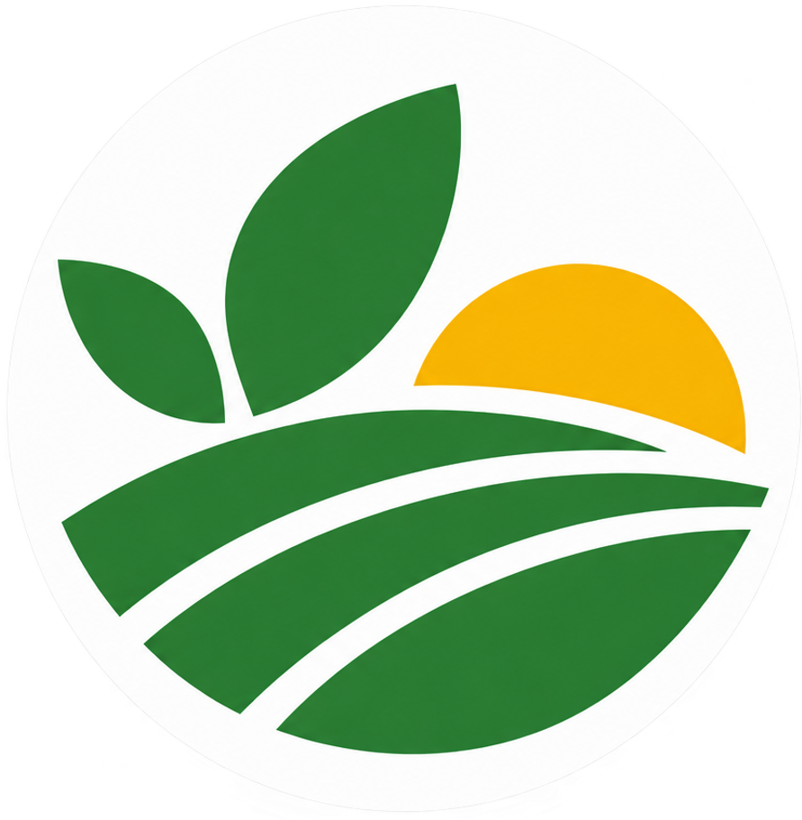

Точки притяжения:
Выберите объект — карточки можно сортировать по местности или по алфавиту. Внутри каждой карточки есть ссылка на подробное описание.
Сортировка:

АгроПритяжение
Выберите объект — карточки можно сортировать по местности или по алфавиту. Внутри каждой карточки есть ссылка на подробное описание.